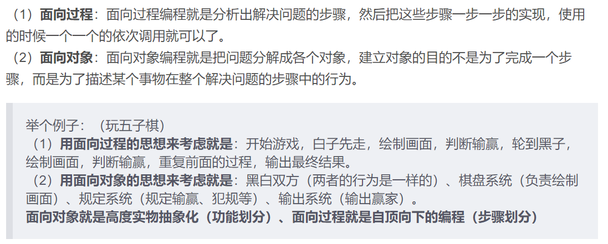
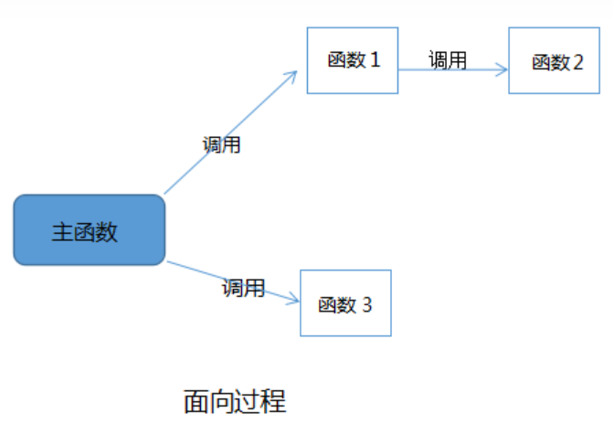
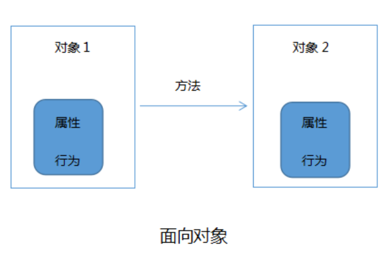
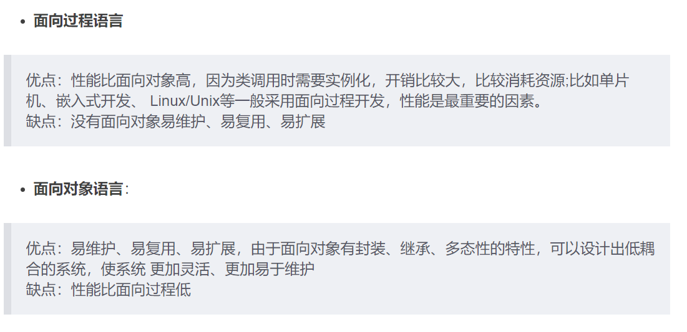
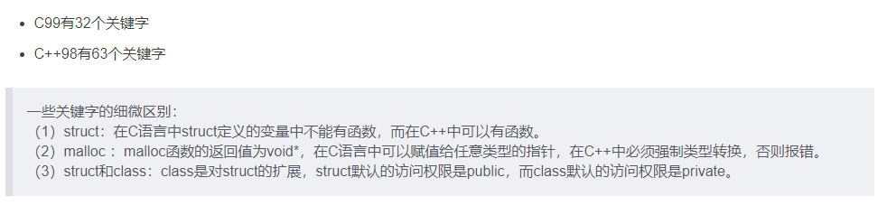

C++与C的区别
1. 面向对象与面向过程的区别
介绍（C –> 面向过程；C++ –> 面向对象）：

 两者的优劣：

2. 其他区别
1. 返回值
C语言中如果一个函数没有指定返回值类型则默认int，而C++默认void
2. 参数列表
C语言中函数参数列表为空时可以传入任意多的参数，而C++则不能传入参数
3. 缺省参数
缺省参数就是给函数参数一个默认值，若调用时没传入就采用默认值。C不支持缺省参数，而C++支持（注意默认的参数要靠参数列表后边；缺省参数不能同时出现在函数定义和函数实现中）
4. 函数重载
C++可以实现函数重载，C不可以
5. 后缀名不同
C是.c而C++是.cpp
6.关键字不同

3. struct 和 class区别
C ++ 中struct和class区别：
- 默认权限不同：（struct默认是public, 而class默认是private）
- class可以声明模板，而struct不可以
C中的struct和C++的Struct区别：
注意： C++的struct和C的struct不一样， C++的struct和class差不多如上所述。
C中Struct不能存放函数（但是能用函数指针来实现）以及没有权限设置。所以C中的Struct 只能是一些变量的集合体，可以封装数据。
C中struct利用函数指针存放函数案例：
1 | #include <stdio.h> |